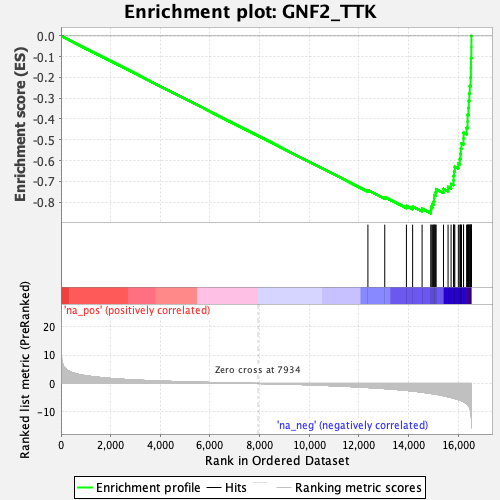
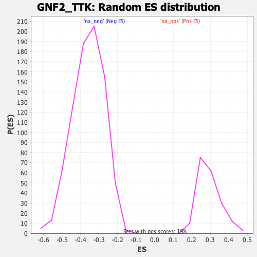

| | | Dataset | DE_genes2 |
| Phenotype | NoPhenotypeAvailable |
| Upregulated in class | na_neg |
| GeneSet | GNF2_TTK |
| Enrichment Score (ES) | -0.8532096 |
| Normalized Enrichment Score (NES) | -2.380122 |
| Nominal p-value | 0.0 |
| FDR q-value | 0.0 |
| FWER p-Value | 0.0 |
Table: GSEA Results Summary

Fig 1: Enrichment plot: GNF2_TTK
Profile of the Running ES Score & Positions of GeneSet Members on the Rank Ordered List
| PROBE | GENE SYMBOL | GENE_TITLE | RANK IN GENE LIST | RANK METRIC SCORE | RUNNING ES | CORE ENRICHMENT | | 1 | CCT2 | | | 12360 | -1.408 | -0.7432 | No |
| 2 | RRM1 | | | 13038 | -1.791 | -0.7764 | No |
| 3 | FEN1 | | | 13911 | -2.426 | -0.8186 | No |
| 4 | TYMS | | | 14161 | -2.652 | -0.8221 | No |
| 5 | CENPU | | | 14542 | -3.039 | -0.8318 | No |
| 6 | PCNA | | | 14896 | -3.501 | -0.8378 | Yes |
| 7 | MCM4 | | | 14906 | -3.510 | -0.8230 | Yes |
| 8 | RACGAP1 | | | 14957 | -3.580 | -0.8103 | Yes |
| 9 | MCM2 | | | 15006 | -3.658 | -0.7972 | Yes |
| 10 | PLK4 | | | 15029 | -3.687 | -0.7823 | Yes |
| 11 | GMNN | | | 15032 | -3.688 | -0.7663 | Yes |
| 12 | CKS2 | | | 15086 | -3.767 | -0.7529 | Yes |
| 13 | ZWINT | | | 15107 | -3.798 | -0.7375 | Yes |
| 14 | CDC20 | | | 15404 | -4.309 | -0.7365 | Yes |
| 15 | FANCI | | | 15588 | -4.678 | -0.7271 | Yes |
| 16 | FOXM1 | | | 15710 | -4.931 | -0.7128 | Yes |
| 17 | RFC4 | | | 15807 | -5.149 | -0.6960 | Yes |
| 18 | CDK1 | | | 15810 | -5.156 | -0.6735 | Yes |
| 19 | CCNB2 | | | 15832 | -5.225 | -0.6518 | Yes |
| 20 | TPX2 | | | 15859 | -5.288 | -0.6302 | Yes |
| 21 | DBF4 | | | 16002 | -5.664 | -0.6140 | Yes |
| 22 | KIF2C | | | 16061 | -5.848 | -0.5918 | Yes |
| 23 | KIF18B | | | 16087 | -5.923 | -0.5673 | Yes |
| 24 | PRC1 | | | 16103 | -5.960 | -0.5421 | Yes |
| 25 | MELK | | | 16129 | -6.045 | -0.5171 | Yes |
| 26 | HJURP | | | 16210 | -6.380 | -0.4939 | Yes |
| 27 | GINS2 | | | 16213 | -6.392 | -0.4660 | Yes |
| 28 | BUB1B | | | 16335 | -7.102 | -0.4422 | Yes |
| 29 | NUSAP1 | | | 16374 | -7.420 | -0.4119 | Yes |
| 30 | CCNA2 | | | 16376 | -7.439 | -0.3793 | Yes |
| 31 | KIF11 | | | 16409 | -7.860 | -0.3468 | Yes |
| 32 | SMC4 | | | 16421 | -7.981 | -0.3124 | Yes |
| 33 | TTK | | | 16444 | -8.189 | -0.2778 | Yes |
| 34 | SMC2 | | | 16464 | -8.568 | -0.2414 | Yes |
| 35 | TOP2A | | | 16497 | -9.873 | -0.2000 | Yes |
| 36 | CENPF | | | 16507 | -10.688 | -0.1536 | Yes |
| 37 | ASPM | | | 16510 | -10.824 | -0.1062 | Yes |
| 38 | NDC80 | | | 16527 | -12.233 | -0.0535 | Yes |
| 39 | HMMR | | | 16528 | -12.240 | 0.0002 | Yes |
Table: GSEA details [plain text format]

Fig 2: GNF2_TTK: Random ES distribution
Gene set null distribution of ES for GNF2_TTK